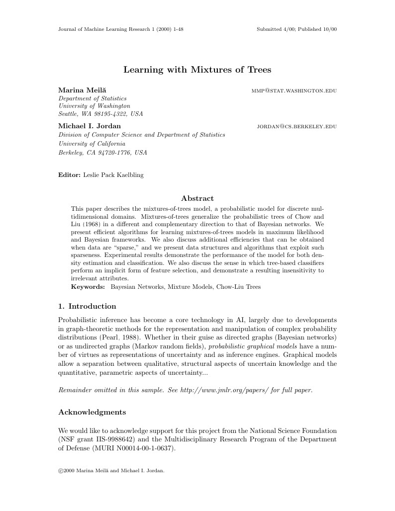
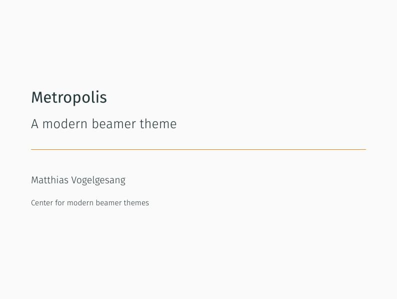
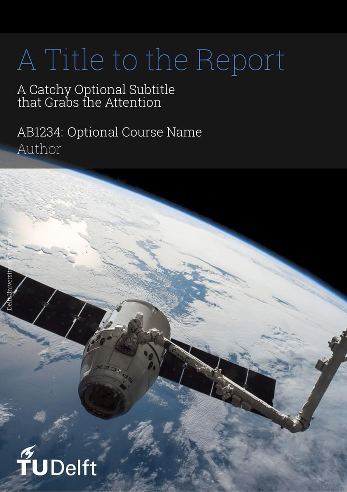

Introduction to LaTeX#
What is LaTeX?#
LaTeX (pronounced “Lay-tech” or “Lah-tech”) is a typesetting system commonly used for the production of scientific and mathematical documents due to its powerful handling of formulas and bibliographies. Unlike typical word processors, LaTeX is not a WYSIWYG (What You See Is What You Get) system. Instead, it is a WYSIWYW (What You See is What You Want) system. It functions more like a markup language, similar to HTML.
Discussion
Can you think of examples of WYSIWYG vs WYSIWYW systems? Have we encountered some of each already in this class?
In LaTeX, the author uses plain text combined with markup tagging conventions to define the general structure of a document (such as article, book, and letter), to stylize text throughout a document (such as bold and italics), and to add citations and cross-references. The primary focus and strength of LaTeX is the creation of well-formatted mathematical expressions and scientific documentation.
Here’s an example of how LaTeX can be used to write a mathematical expression:
\begin{equation}
\frac{\partial V}{\partial t} + \frac{1}{2}\sigma^2 S^2 \frac{\partial^2 V}{\partial S^2}
+ rS\frac{\partial V}{\partial S} - rV = 0
\end{equation}
This snippet of LaTeX code will produce a formatted equation for part of the Black–Scholes equation governing the price evolution of derivatives under the Black–Scholes model. It will be rendered like this:
LaTeX is widely used in academia, especially in fields that require the use of complex formulas and diagrams, such as physics, mathematics, statistics, computer science, engineering, and quantitative finance. The quality and readability of documents produced with LaTeX, particularly the way it handles formulas, tables, and references, are considered to be better than what can be easily achieved with standard word processors.
Furthermore, LaTeX and other programmatically generated documents can be useful for incorporating automatically generated charts and tables into reports. It enables automation in updating charts when underlying data changes, streamlining the report generation process.
Discussion
Where does this step fit in our view of the reproducible analytical pipelines we discussed at the end of the class?
Examples#
Example of the kinds of documents that can be created with LaTeX.
Academic Journal Article. See PDF here. This one is for a Machine Learning Journal, for example.
Slides for Presentation. See PDF here.
Highly stylized reports See PDF here.
Journal Article Template for Machine Learning Journal 
Slides for Academic Presentation 
Formal Report 
An Overview of How to Use LaTeX#
First, let’s start with a high level overview of the initial steps to using LaTex, including setting up a LaTeX environment, creating your first document, and understanding the basic structure.
Step 1: Install a LaTeX Distribution#
To begin using LaTeX, you need to install a LaTeX distribution. For Windows, a popular choice is MiKTeX or TeXLive (in this class, we have required TeX Live); for macOS, MacTeX is recommended; and for Linux, TeX Live is widely used.
Step 2: Choose a Text Editor#
After installing the distribution, select a text editor to write your LaTeX code. Some popular choices include TeXworks, TeXstudio, TeXmaker, and Overleaf (an online editor). TeXworks comes prepackaged with TeX Live, so we will use that. Also, note that you can use your normal text editor, like VS Code. LaTeX can be compiled from the command line. All you need is something to edit the text of the .tex files. However, note that editors like VS Code, or Sublime Text have extentions that make it very easy to work with LaTeX documents.
Step 3: Create Your First Document#
Open your text editor and start with a basic document. Here’s a simple example:
\documentclass{article}
\begin{document}
Hello, World!
\end{document}
This code creates a basic document with the phrase “Hello, World!”
Step 4: Understanding the Basic Structure#
\documentclass{article}: This line specifies the type of document you’re creating - in this case, an article. Other types includebook,report, etc.\begin{document}and\end{document}: These lines mark the beginning and end of the content in your document.The text between
\begin{document}and\end{document}is where you will write the content of your document.
Step 5: Compile Your Document#
To view your document, you need to compile it:
In a standalone editor, there’s usually a button to compile the document.
In Overleaf, the document compiles automatically.
The output will be a PDF file displaying “Hello, World!”
Step 6: Explore Basic Formatting#
Start experimenting with basic formatting commands like \textbf{} for bold text, \textit{} for italics, and \\ for a new line.
Step 7: Preview and Debug#
After making changes, compile and preview the document. If there are errors, the compiler will provide messages to help you debug.
A More In-Depth Tutorial#
Now, let’s turn to a more in-depth tutorial, provided by Overleaf.
My LaTeX Templates in the blank_project Repo#
-
My preferred templates are in the “reports” folder
Discussion
How do I go about automatically including tables and charts?
Conclusion#
This is just the beginning. LaTeX is a powerful tool with capabilities extending far beyond basic text formatting, including complex mathematical formulas, tables, figures, and bibliographies. As you become more familiar with LaTeX, you can explore more advanced features to suit your specific needs.
Remember, the learning curve for LaTeX can be steep at the beginning, but the control and quality of the output it offers are unmatched.